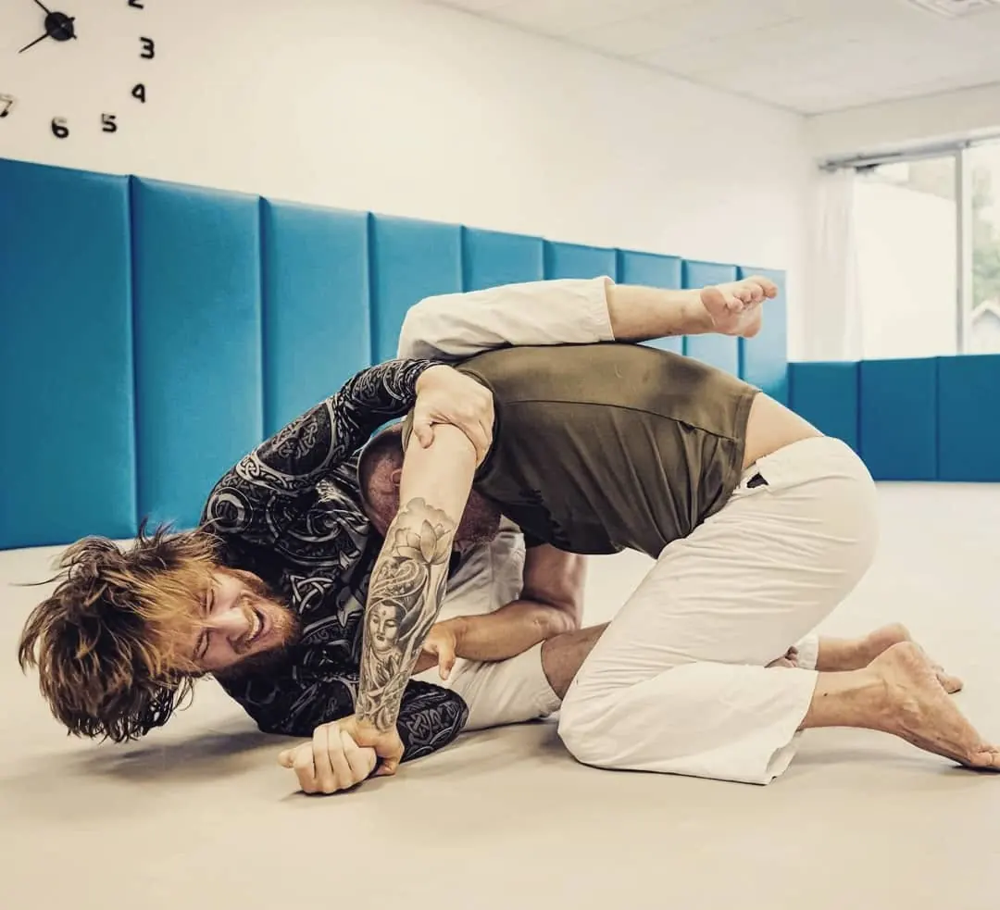
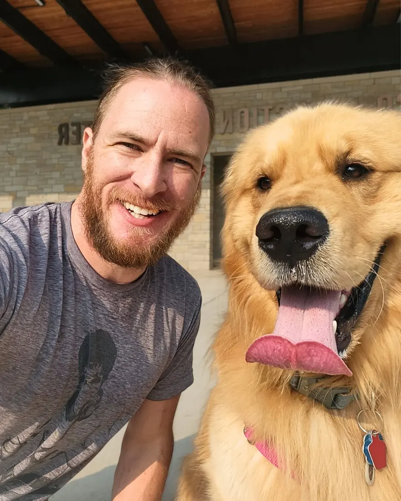
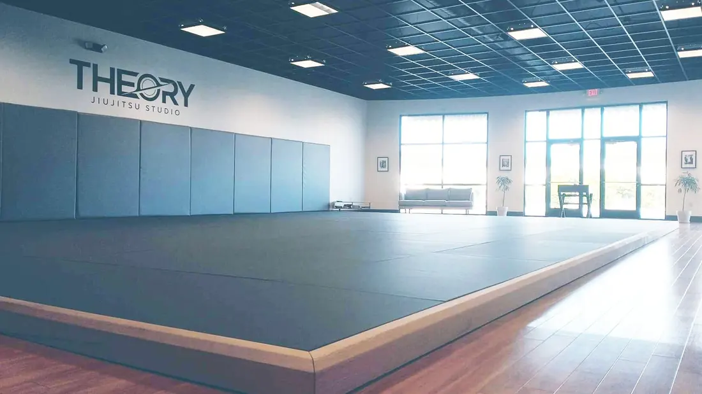
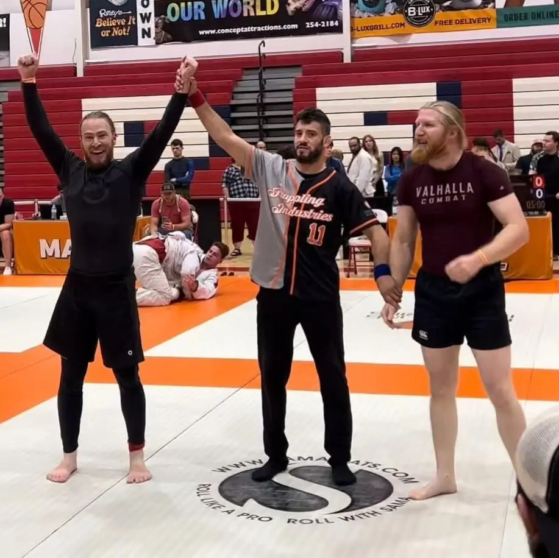
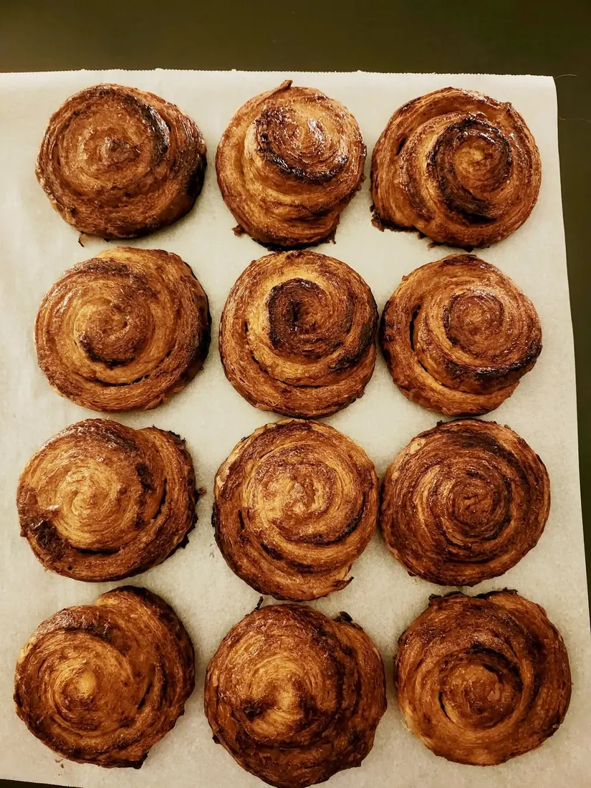
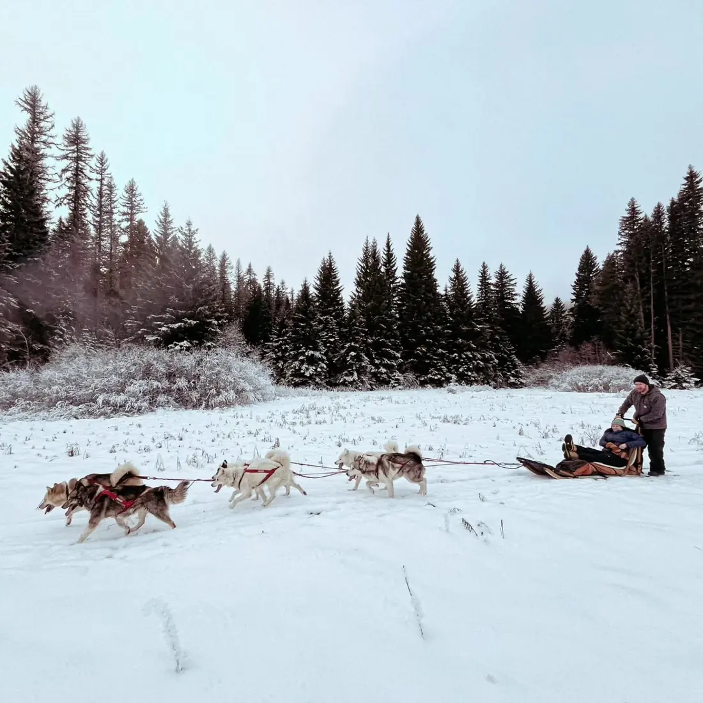

Start with the real problem.
Look beyond the immediate request. Who is affected, what is slowing things down, and what would a useful improvement actually look like?
Creative thinking.
Connected systems.
Practical solutions.
Marketing, analytics, business ownership, and practical systems thinking.
I connect people, processes, and ideas to make complicated work clearer.
Curious about my experience? Start with a question and explore a prepared answer with links to the relevant work.
Prepared answers, not live AI. Your question stays in your browser.
Three examples of how I approach problems, from insight to implementation.
Understanding content results without mistaking reach for sales.
Connecting lead intake, the first class, onboarding and community experience.
Connecting miniatures, input tracking and a digital game interface.
Choose one of the three fields below to reveal three relevant case studies, including the featured one.
Different roles. One consistent approach: understand the problem, connect the moving parts, then improve the experience.
Marketing, business ownership, coaching, and technical projects have each shaped how I work.
Look beyond the immediate request. Who is affected, what is slowing things down, and what would a useful improvement actually look like?
Creative work, customer communication, reporting, and operations aren't isolated. Changes in one area influence the others.
Make practical changes, test assumptions, learn from available evidence, and don't confuse activity with impact.
Adobe Creative Suite, Canva, photography & video
Google Analytics 4, Sheets & reporting
HubSpot, Make.com, Microsoft Office & workflows
From content production to business ownership, here's how my experience connects.
Social Media Coordinator
Content production, product storytelling, publishing coordination, and performance review.
Independent Marketing & Systems Work
Marketing, websites, content development, and practical digital systems.
Founder · Marketing & Operations
Founded and operated a community-centered business, handling customer experience, marketing, and daily operations.
Thrivent · ThedaCare · Karate America
Document operations, health coaching, and instruction built a foundation in communication and process reliability.
I grew up in Wisconsin's Fox Valley, where curiosity has taken me in a lot of directions. Nearly 25 years of martial arts led to teaching and opening my own jiu-jitsu studio. I love the community and storytelling that come with Dungeons & Dragons, and I'm usually building some new tool or automation on the side. Outside of that, you'll find me hiking with Nimbus, my golden retriever, or keeping family traditions alive through Danish baking.






Interested in marketing, analysis, or practical digital systems? Let's talk about what you're building.
levivanstap@gmail.com